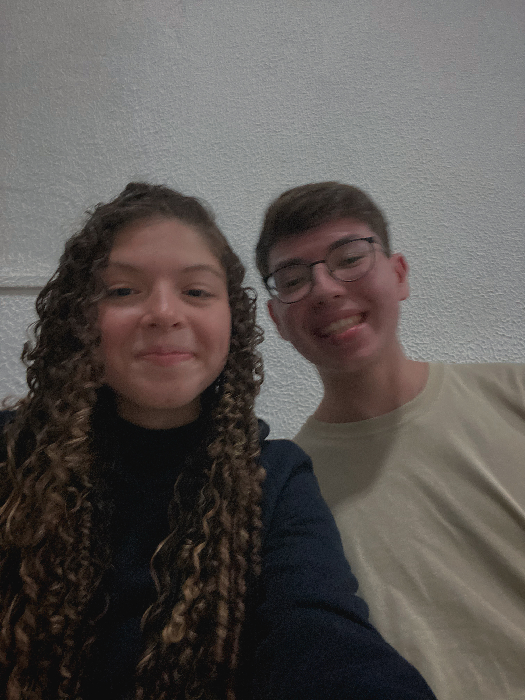

Era uma vez, um serzinho chamado “Matheus” que vivia sua vida sem pensar em gostar de alguém,
sem pensar nessa vida amorosa, sem pensar o quão bom é gostar de alguém....
Como Matheus era uma pessoa que gosta de adicionar todas as pessoas com quem conversa no whatsapp
para que ocorra uma troca de status,
ele visualizando os status das pessoas e as pessoas o dele,
ele adicionou uma jovem chamada “Isabella Castellon”
Matheus ficou surpreso ao ver que ela o tinha adicionado,
mas sem segundas intenções...
Então, Isabella Castellon, no dia
9 de outubro de 2022, posta um status que
Matheus responde com a seguinte mensagem..
Não tinha nada demais, era apenas uma simples resposta de status e
nunca que nós imaginaríamos começar a conversar com isso!
Foi indo, uma resposta aqui, uma resposta ali, até
o mês de Janeiro chegar acompanhado com um sentimento...
Ela responde um status do Matheus perguntando
se ele estudava na etec, e ele responde que sim e
por isso fazia parte do multimídia!
Passam-se alguns dias e a Isabella novamente pergunta através
de um status como ele conseguia ler tanto,
e então,
os dois começam a se falar um pouco mais...
Matheus fala que não gosta de ler e mesmo assim aconselha com algumas dicas,
vai puxando mais assuntos e assim eles
continuam conversando
durante 6 dias consecutivos.
Eles param de se falar, e após 10 dias, novamente ela responde
um status dele perguntando sobre o curso
que ele fazia na
escola e assim foi mais 6 dias consecutivos se falando...
Falaram sobre o avivamento de Asbury,
sobre emprestamento de livros e
muitas coisas relacionadas a isso...
Então, começam as oscilações nos assuntos,um dia se falavam, outro dia não
e assim um sentimento foi sendo criado em Matheus,
que sempre tentava o reprimir, até que...
Após Matheus postar um satus tocando seu dedilhado, ele foi assistir um
filme com seus pais e seu maravilhoso
abençoado relógio
que mostrava as mensagens que chegavam...
No dia 19/03/2023 às 22:34 durante o filme, seu relógio vibra.
Matheus pega para ver a mensagem e na tela aparece:
Isabella Castellon
“que incrível!!!! tá demaiiis”
Desse dia em diante, Matheus para de
reprimir seus sentimentos e o aceita.
Em algum dia durante o ano de 2023, Vergani também pergunta à
Matheus
se ele gostava de alguém, e ele fala sobre a tal Isabella Castellon
Agora definitivamente ele aceita que não é só um sentimento
passageiro que iria passar com o tempo, mas...
Passam-se os dias,
Passam-se as semanas...
E as conversas continuam, até dar toda a história do grupo dos rapazes e mais pessoas
descobrirem que o Matheus realmente gostava da Castellon.
Por isso, Matheus, sabendo que a Isabella não tinha condições
de conseguir ir no acampamento do Wake,
mais
conhecido como “Enraizados na Cruz”
Ele faz um próposito com Deus nos seguintes termos:
“se ela for no acampamento,
eu falo para ela
sobre os meus sentimentos!”
Os dias se passavam,
Matheus ansioso estava...
Durante as semanas que passavam, Matheus
raramente perguntava sobre essa situação,
se ela iria
no acampamento ou não com medo de constrangê-la!
Uma memória sobre esse tempo foi que certo dia Matheus tirou uma foto de
algum livro,
capa ou algo parecido perguntando se ela iria, Isabella responde com
uma foto
se mostrando com uma expressão confusa não sabendo da resposta ainda.
E foi assim até o último dia das incrições para o
acampamento, mas, ainda não era o fim...
Um dia após as incrições se encerrarem, Matheus fala com o Vergani
no almoço sobre a situação da Isabella,
e ele não da uma notícia muito boa para ele...
“mano, infelizmente ela não tem dinheiro para conseguir ir,
então se ninguém pagar para ela, ela não vai conseguir ir”
Vergani
Isso no almoço, mas sempre é bom esperar a janta...
No dia 17 de abril de 2023, Matheus e Isabella
não tinham se falado durante o dia, mas, as 21:04
uma mensagem chega no celular de Matheus:
Isabella Castellon
Neste momento, o coração de Matheus desesperou,
congelou completamente e pensou consigo mesmo:
“Agora vou ter que cumprir meu trato com Deus, Ele deu o pulo dEle, agora eu vou ter que dar o meu pulo”
e ligou para o Vergani logo em seguida onde ficaram algum tempo conversando sobre e ele raciocinando a loucura que iria fazer.
Então, como Matheus estava perdido no assunto, Vergani sugere para que ele
peça o
sabor de chocolate preferido dela usando uma desculpa de que iria comprar
para comer com alguns amigos no ônibus....
(como ela é uma tuguinha, nem desconfiou de nada)
Ele compra um lacreme ao leite e escreve uma cartinha
contendo as seguintes palavras:
Isabella Castellon, estou escrevendo essa carta pois eu preciso te contar uma coisa que eu já
estou querendo falar com você sobre isso a um tempinho. Desde que a gente começou a conversar mais em Janeiro, eu tenho
começado a gostar de você, e as vezes que a gente ia se falando, eu gostava ainda mais de você, e eu achava que isso seria
passageiro mas realmente não foi, e não está sendo, porque o que mais me faz gostar de você, é primeiramente a paixão por
Jesus que você tem. Isso me motiva a cada dia mais buscar mais Jesus, essa paixão que você tem por Ele é radiante, e eu quero
ser assim ainda, quero ser apaixonado e falar dEle a ponto de as pessoas sentirem o que eu estou passando na pele, e eu sinto
isso com você falando.
E eu lendo provérbios 31 que eu leio toda sexta no shabat, no versículo 26 define o porque eu gosto de você:
"Fala com sabedoria, e a instrução da bondade está na sua língua". Eu estava pensando em algo que definisse o porque eu gosto
de você, e esse versículo representa isso, o seu falar me faz gostar cada vez mais de você, fora que você também é linda.
É um pacote completo, beleza por fora, e principalmente beleza por dentro, paixão por Jesus por dentro.
Se você sentir o mesmo, eu preciso falar que não quero namorar agora, fora que meu pai não deixaria, imagino que nem o seu,
e muito menos você queira namorar agora, pq namorar em adolescência é muito ruim, enquanto nós poderíamos estarmos preocupados
em ir atrás da presença, a gente estaria preocupado com namoro e eu não quero isso agora, quem sabe com 18, mas só se for da
vontade de Deus.
Estou orando sobre isso, pq antes de tudo eu quero fazer a vontade do Pai, não a minha, não a de algum líder, de alguma pessoa,
mas de Deus, e eu não quero que isso seja fora da vontade dEle, e eu não preciso nem espero que você me responda agora, não vou
te forçar nada, até pq isso seria mto mal educado da minha parte, mas eu preciso saber:
Você sente o mesmo?
Matheus Estevam
tudo bem que foi no último dia porque ele não queria falar com ela depois de entregar isso e ele estava se tremendo mais que quando ele falo com ela atualmente, mas ninguém precisa saber desses detalhes 🙂
Um dia após a entrega da cartinha, Isabella manda uma
mensagem para Matheus falando que precisava de um tempinho
para conseguir realmente
dar uma resposta sobre a cartinha...
Na cabeça dele, isso não era um não, e ele crava isso nela
e não para de orar, e nos meses seguintes foi um
tempo que ele chama de “A Espera”.
Ele fala isso com o Vergani, com o Pavê e desse momento em diante
foi um período complicado na vida dele até junho praticamente.
Algumas vezes ele chorou por estar sendo difícil e doloroso o processo de
conseguir aguentar a espera! A paciência era
algo que ele não tinha, mas com esse processo,
ela estava sendo gerada. Este dom de Deus estava sendo gerado na vida dele através da espera!
As vezes ela não responder as mensagens, as demoras, o dia que ela
não respondeu ele e foi responder só no outro dia, tudo isso gerava
um medo
da resposta ser "não" e Matheus estar perdendo tempo orando por algo que não iria dar certo...
Entretanto, nós da equipe não sabemos o que motivava ele, não sabemos como,
mas ele nunca pensou em desistir, mesmo com pressão familiar, dos amigos da escola
falando que a Isabella estava enrolando ele, o Matheus nunca pensou em parar de falar com ela!
Mesmo com motivos, ele não desistiu, e isso criou um amadurecimento nele
que era necessário! Apesar das lutas,
dos dias difíceis, existiam muitos momentos bons
que o motivavam a continuar no processo e a não desistir dela!
“se hoje não for tão corrido
queria falar com vcc”...
Matheus estava no China In Box da Paes de Barros, e no mesmo instante que ele
leu essa mensagem às 13:05, o coração acelerou e a fome passou...
Ele imagina que era sobre a resposta, então pergunta se era algum tipo de assunto delicado para
tentar conseguir descobrir se era a resposta da cartinha, e sim, era a resposta da cartinha, mas,
Isabella não conseguiu falar, pois não era tempo da resposta chegar...
Durante esse processo (não sabemos o dia exato, mas) no dia 28/05/2023
ocorreu a primeira conversa sobre algo que iria aproximar eles ainda mais, e que Deus
já estava alinhando antes mesmo de uma resposta ser traga a tona, o famoso:
Este ministério surgiu do coração de Deus e nós da equipe temos certeza disso até hoje! Não há dúvidas que Deus escolheu eles a dedo para este ministério! Com certeza isso é um aprendizado para o futuro deles...
No mesmo dia 28, surgiu o tão famoso áudio:
“mais que amigos, fridens✨”
"E foi um tempo de preparo do ministério tão leve e gostoso de ser feito ao seu lado! Enquanto nós nos
falávamos eu sentia que no fundo você já tinha tomado a decisão que gostava de mim mas ainda não tinha falado e isso me motivava ainda mais!"
ass: ma
E foram criando as coisinhas, preparando textinhos para os dias importantes, roteiros e divisões de falas...
Todos acordaram muito cedo, Matheus vivia sua vida normal, fazendo
seu jejum
para Conferência Unity sem tomar café da manhã,
mas só aproveitando a resenha com seus amigos..
Isabella por sua vez, estava com suas amigas se divertindo e comendo,
que é o
mais importante, mas, será que ela sabia que ela
iria dar a resposta á Matheus neste dia?
Matheus não sabia de nada, mas, durante o último culto, um sentimento ruim assombrava Matheus, pensamentos
de que ele teria deixado Isabella triste e brava rodeavam sua mente em um nível que ele não conseguia mais
prestar atenção, até ir falar com ela no final do dia, ás 18:00...
Acabou o “culto”, Matheus viu que ela estava com suas amigas, mas o sentimento de que ele
tinha feito algo errado e o medo que estava sobre ele falou mais alto, então,
do centro do salão saiu, á esquerda
do salão seguiu, até a encontrar...
“Isa, posso falar com você rapidinho?”
Essa foi a primeira frase de uma conversa que mudaria sua vida.
Então ele começa a falar com ela sobre o que estava acontencedo, até que ela começa a dizer e falar
“não, eu não estou brava com você, mas, eu tenho algo a te falar.
Matheus, sem esperar que a resposta viria nesse dia,
fica sem reação e pergunta "sim para qual pergunta?"
Enquanto os pais dela o apressavam para ir embora, ela fala que a resposta era
sim para a cartinha que ele tinha entregado há ela três meses atrás, e que ela gostava dele!
A frase que mudou duas vidas em 2023...
Matheus não sabia mais o que fazer, não sabia o que responder,
não tinha reação, não tinha expressividade, não tinha movimento, não tinha coração...
Por isso, mais uma vez ele não soube o que fazer e foi correndo para o secreto comemorar
uma notícia tão boa que ele nem imaginava, que ele nem sonhava em receber tão cedo!
Os dias se passavam, parecia que estavam vivendo em um conto de fadas, até que
Matheus começa a passar por uma
fase não tão legal que impactou
tudo ao seu redor, inclusive seu relacionamento com a Isa.
Uma coisa que não tinha sido conversada ainda era
o tempo das respostas de Isabella para com Matheus, o que ocasionava
em uma frustração de Matheus em um momento delicado, onde seus pensamentos viajavam..
Durante muitos dias, Matheus tinha seus pensamentos
afetados pelo seu estado emocional. Seus sentimentos o deixavam para baixo,
ele não tinha vontade de levantar da cama e sentimentos de tristeza eram potencializados.
Infelizmente, Matheus deixou esses pensamentos vencerem ele durante um tempo,
o que ocasionou que ele parou de chamar Isabella no
whatsapp e ela também
não o chamou, assim causando ainda mais confusão em sua cabeça.
Matheus achava que Isabella tinha parado de gostar dele,
pois ela não o chamava e eles não se conversavam mais..
Até que no dia 05 dezembro, Matheus já estava cansado, não estava aguentando mais,
e o Matheus responde uma mensagem ás 11:14, Isa responde 13:34, Matheus responde
novamente ás 13:50 e Isa desaparece o restante do dia...
Isabella responde ás 21:22...
Matheus não consegue, ele desaba, fica se perguntando o
por que de tanta demora, o
por que ela ignorava ele e infelizmente,
ele não consegue mais respondê-la, assim, dando vácuo...
✨
🙂
Uma conversa que por meses Matheus segurou, não quis conversar, quando ele conversou
isso com Isabella,
eles se resolveram e começaram a viver uma amizade muito mais
leve do que eles viviam antes de terem conversado sobre isso!
Nesse áudio, ela fala que enquanto orava pela escola dela, Jesus gerou um anseio,
algo dentro do coração dela em
querer pregar na sua escola, e ali, nós vemos
que Deus realmente estava alinhando sonhos e propósitos...
A partir desse dia, o coração deles queimavam juntos pelo mesmo propósito
que é fazer o reino de Deus conhecido nas escolas!
Possivelmente Matheus nunca falou para Isabella o quanto isso
foi marcante para ele, por isso, nós da Indústria Matelilinho fomos atrás
de Matheus para pegar um depoimento dele sobre este assunto tão importante.
Cara bellinha! estou escrevendo isso para que você veja o quanto você me faz feliz e o quanto eu vejo que você se esforça para me deixar feliz! Me lembro que naquela época eu estava acordando muito cedo para conseguir ter um tempo com Deus e nós precisávamos de um devocional juntos! Estávamos necessitados de Jesus e queríamos buscar juntos a Deus, mas, o horário sempre nos impedia, até que você da a ideia de fazermos 05:00am, o horário que eu acordava na época!
VOCÊ É MALUCA!
Zé, você, indo para a escola, escolheu acordar CINCO HORAS DA MANHÃ para fazer um devocional com um amigo.
Você tem noção disso? Se não, eu tenho🙂.
O quanto que eu fiquei feliz com esse dia e a forma que eu vi de você demonstrar que gostava de mim se dispondo a acordar mais cedo ainda para ir a escola, sabe? A pessoa que mais ama dormir que eu conheço acordando cedo para fazer um devocional junto comigo!
Muito obrigado por sempre me fazer feliz e sempre buscar Jesus junto comigo e sempre me incentivar a ser uma pessoa melhor, a ser uma pessoa mais parecida com Jesus!
ass: matheuzinho
17.07.2024 - 07:15pm
As Indústrias Matellinho não se responsabiliza por tal ocorrido,
mas ela sabe que foi um marco muito grande para o relacionamento entre Matheus e Isabella!
Eles começaram a voltar em assuntos passados e contar as versões de
cada um sobre o ocorrido, falaram sobre o período em que não se conversaram, falaram sobre orgulho...
No geral, se alguma coisa incomoda alguém, o outro alguém impulsiona a
outra pessoa a falar com a desculpa “sinceridade” e assim eles resolvem o assunto sem deixar “pontas soltas“.
(ouvi falar que rolou isso recentemente, foi uma conversa difícil,
mas necessária! acredito que agora os dois estejam bem em relação a isso!)
(nessa velocidade de tartaruga quero ver quando eles vão ter algo a mais...)


(novamente ouvi boatos que mais um sonho do Matheus foi realizado)
oiii castellinho! tudo bem?
eu sei que isso não é uma carta física, nem um presente físico, mas eu fiz com muito carinho e pensando no futuro zé! não sei se você entendeu tudo, daria muito bem para eu falar muitas mais coisas como o dia da nossa primeira vez conversando que nem gente pessoalmente, do dia que eu falei com sua mãe (isso eu não falei pq nao lembro), do dia que a gente ficou junto no culto para apresentar o ide e amai aos g.m, enfim, são muitos momentos especiais que eu carrego comigo!
não sei se você se lembrava de todos estes momentos, mas eu queria tornar isso especial e eterno! que nós possamos lá na frente olhar para este site e pensar “uau, dois bobos!” e é isso zé!
acho que esse ano que passou foi uma loucura completa para mim, desde que eu tive sua resposta meu mundo virou de cabeça para baixo e até hoje parece que eu sonho acordado e é lindo de ver!
que nós possamos continuar na mesma essência, continuando com a nossa amizade com Jesus no centro de tudo, sempre colocando Jesus no meio de nossos “planos” e planejamentos!
e como é lindo ver tudo isso que passou! é lindo poder chegar neste dia, olhar para trás e ver que Jesus sempre esteve ao nosso lado e sempre estará conosco, nos guiando e cuidando de nós!
eu espero que você tenha gostado deste “presente” e que você possa apreciar o final do presente!
queria muito poder falar outras coisas, mas tudo que eu posso falar até o presente momento eu já falei, menos que..
ass: matheuzinho
17.07.2024 - 07:15pm